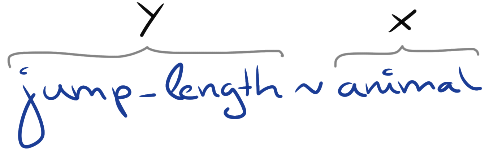
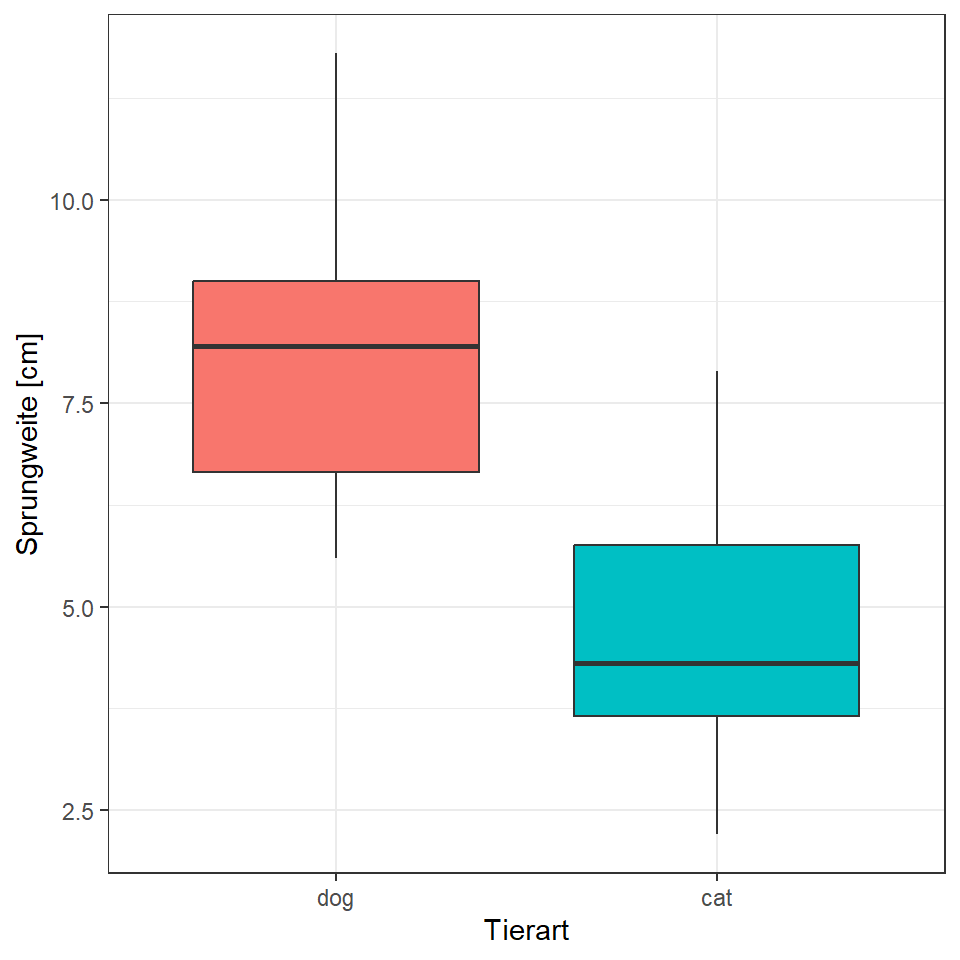
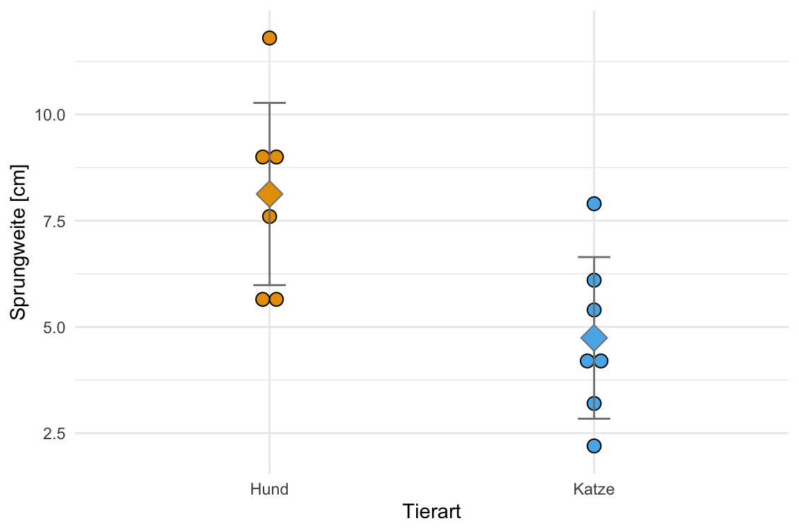
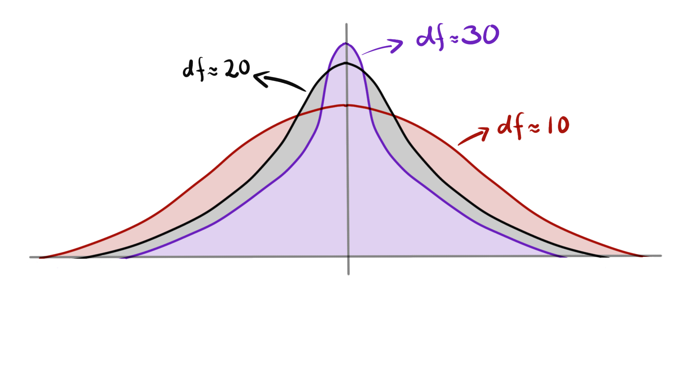

18 Der t-Test
Der t-Test vergleicht zwei Mittelwerte gewichtet bei der Standardabweichung und der Fallzahl miteinander. Etwas statistisch genauer vergleicht der t-Test die Parameter zweier Normalverteilungen miteinander.
Du findest auf YouTube Der Two Sample t-Test erklärt als Video Reihe. Ich werde zwar alles nochmal hier als Text aufschreiben, aber manchmal ist das Sehen und Hören dann einfacher.
Der t-Test ist der bedeutende Test, wenn es um das Verständnis der Algorithmen und Konzepte in der Statistik geht. Wir haben den t-test schon genutzt um die Idee des statistischen Testens zu verstehen und wir werdend den t-Test auch im statistischen Modellieren wiedertreffen.
Was macht also der t-Test? Der t-Test vergleicht die Mitfellwerte zweier Gruppen miteinander. Das heißt wir haben zwei Gruppen, wie Hunde und Katzen, und wollen nun wissen wie sich die Sprungweiten der Hundeflöhe im Mittel von den Katzenflöhen unterscheiden.
Wir nutzen folgende Formel in der Klausur wenn ein Zweistichproben t-Test verlangt wird:
\[ T_{calc} = \cfrac{\bar{y}_1-\bar{y}_2}{s_{p} \cdot \sqrt{\cfrac{2}{n_{group}}}} \]
Wir nutzen folgende Formel in der Klausur für einen gepaarten t-Test:
\[ T_{calc} = \sqrt{n}\cfrac{\bar{d}}{s_d} \]
Wenn nicht anders in der Klausuraufgabe angegeben dann ist \(T_{\alpha = 5\%} = 1.96\) oder \(\alpha = 5\%\).
18.1 Genutzte R Pakete für das Kapitel
Wir wollen folgende R Pakete in diesem Kapitel nutzen.
pacman::p_load(tidyverse, magrittr, broom, readxl)Am Ende des Kapitels findest du nochmal den gesamten R Code in einem Rutsch zum selber durchführen oder aber kopieren.
18.2 Daten für den t-Test
Wichtig ist, dass wir schon jetzt die Modellschreibweise lernen um die Daten richtig nutzen zu können. Wir werden die Modelschreibweise immer wieder sehen und diese Art eine Abhängigkeit zu beschreiben ist sehr wichtig in den folgenden Kapiteln.

Was brauchen wir dafür in R? Wir brauchen dafür eine Spalte \(y\) mit kontinuierlichen Zahlen und einer Spalte \(x\) in dem wir einen Faktor mit zwei Leveln finden. Jedes Level steht dann für eine der beiden Gruppen. Das war es schon. Schauen wir uns nochmal den Datensatz flea_dog_cat.xlsx in Tabelle 18.1 an und überlegen, wie wir das realisieren können.
| animal | jump_length | flea_count | grade | infected |
|---|---|---|---|---|
| dog | 5.7 | 18 | 8 | 0 |
| dog | 8.9 | 22 | 8 | 1 |
| dog | 11.8 | 17 | 6 | 1 |
| dog | 8.2 | 12 | 8 | 0 |
| dog | 5.6 | 23 | 7 | 1 |
| dog | 9.1 | 18 | 7 | 0 |
| dog | 7.6 | 21 | 9 | 0 |
| cat | 3.2 | 12 | 7 | 1 |
| cat | 2.2 | 13 | 5 | 0 |
| cat | 5.4 | 11 | 7 | 0 |
| cat | 4.1 | 12 | 6 | 0 |
| cat | 4.3 | 16 | 6 | 1 |
| cat | 7.9 | 9 | 6 | 0 |
| cat | 6.1 | 7 | 5 | 0 |
In Abbildung 18.2 sehen wir einmal den Zusammenhang zwischen den Schreibweise \(y \sim x\) und den beiden Variablen jump_length als \(y\) und animal als \(x\) aus dem Datensatz flea_dog_cat.xlsx. Wir haben also die formula Schreibweise in R als jump_length ~ animal.

Wir benötigen für den t-Test ein normalverteiltes \(y\) und einen Faktor mit zwei Leveln als \(x\). Wir nehmen daher mit select()die Spalte jump_length und animal aus dem Datensatz flea_dog_cat.xlsx. Wichtig ist, dass wir die Spalte animal mit der Funktion as_factor() in einen Faktor umwandeln. Anschließend speichern wir die Auswahl in dem Objekt data_tbl.
data_tbl <- read_excel("data/flea_dog_cat.xlsx") %>%
mutate(animal = as_factor(animal)) %>%
select(animal, jump_length)
data_tbl# A tibble: 14 × 2
animal jump_length
<fct> <dbl>
1 dog 5.7
2 dog 8.9
3 dog 11.8
4 dog 8.2
5 dog 5.6
6 dog 9.1
7 dog 7.6
8 cat 3.2
9 cat 2.2
10 cat 5.4
11 cat 4.1
12 cat 4.3
13 cat 7.9
14 cat 6.1Wir haben jetzt die Daten richtig vorbereiten und können uns nun mit dem t-Test beschäftigen. Bevor wir den t-Test jedoch rechnen können, müssen wir uns nochmal überlegen, was der t-Test eigentlich testet und uns die Daten einmal visualisieren.
18.3 Visualiserung der Daten
Bevor wir einen statistischen Test rechnen, wollen wir uns erstmal die Daten, die dem Test zugrundeliegen, visualisieren. Wir schauen uns in Abbildung 18.3 einmal den Boxplot für die Sprungweiten getrennt nach Hund und Katze an.
Wir sehen, dass sich die Boxen nicht überschneiden, ein Indiz für einen signifikanten Unterschied zwischen den beiden Gruppen. Im Weiteren liegt der Median in etwa in der Mitte der beiden Boxen. Die Whisker sind ungefähr gleich bei Hunden und Katzen. Ebenso sehen wir bei beiden Gruppen keine Ausreißer.
Wir schließen daher nach der Betrachtung der Boxplots auf Folgendes:
- Die Sprungweite ist für beide Gruppen ist annäherend bzw. approximativ normalverteilt.
- Die Standardabweichungen und damit die Varianzen \(s^2_{dog} = s^2_{cat}\) der beiden Gruppen sind gleich. Es liegt somit Varianzhomogenität vor.

Manchmal ist es etwas verwirrend, dass wir uns in einem Boxplot mit Median und IQR die Daten für einen t-Test anschauen. Immerhin rechnet ja ein t-Test mit den Mittelwerten und der Standardabweichung. Hier vergleichen wir etwas Äpfel mit Birnen. Deshalb in der Abbildung 18.4 der Dotplot mit dem Mittelwert und den entsprechender Standardabweichung als Fehlerbalken.

Wir nutzen aber später häufig den Boxplot zur Visualisierung der einzelnen Gruppen. Über den Boxplot können wir auch gut abschätzen, ob wir eine annährende bzw. approximative Normalverteilung vorliegen haben.
18.4 Hypothesen für den t-Test
Ohne eine Hypothese ist das Ergebnis eines statistischen Tests wie auch der t-Test nicht zu interpretieren. Wir berechenen eine Teststatistik und einen p-Wert. Beide statistischen Maßzahlen machen eine Aussage über die beobachteten Daten \(D\) unter der Annahme, das die Nullhypothese \(H_0\) gilt.
Wie lautet nun das Hypothesenpaar des t-Tests? Der t-Test vergleicht die Mittelwerte von zwei Gruppen. Die Nullhypothese ist auch die Gleichheitshypothese. Die Alternativehypothese haben wir auch als Unterschiedshypothese bezeichnet.
Daher ergibt sich für unser Beispiel mit den Sprungweiten für Hunde- und Katzenflöhen folgende Hypothesen. Die Nullhypothese sagt, dass die mittleren Sprungweite für die Hundeflöhe gleich der mittleren Sprungweite der Katzenflöhe ist. Die Alternativehypothese sagt aus, dass sich die mittlere Sprungweite von Hunde- und Katzenflöhen unterscheidet.
\[\begin{align*} H_0: \bar{y}_{dog} &= \bar{y}_{cat} \\ H_A: \bar{y}_{dog} &\neq \bar{y}_{cat} \\ \end{align*}\]Wir testen grundsätzlich auf ein zweiseitiges \(\alpha\)-Niveau von 5%.
18.5 Der Student t-Test
Liegt ein normalverteiltes \(y\) vor und sind die Varianzen für die beiden zu vergleichenden Gruppen homogen \(s^2_{cat} = s^2_{dog}\), können wir einen Student t-Test rechnen. Wir nutzen dazu die folgendeFormel des Student t-Tests.

Eigentlich wäre hier folgende Formel richtig…
\[ s_{p} = \sqrt{\frac{1}{2} (s^2_{dog} + s^2_{cat})} \] …aber auch hier erwischen wir einen Statistikengel um es etwas einfacher zu machen.
\[ T_{calc} = \cfrac{\bar{y}_{dog}-\bar{y}_{cat}}{s_{p} \cdot \sqrt{\cfrac{2}{n_{group}}}} \]
mit der vereinfachten Formel für die gepoolte Standardabweichung $s_p.
\[ s_{p} = \cfrac{s_{dog} + s_{cat}}{2} \]
Wir wollen nun die Werte für \(\bar{y}_{dog}\), \(\bar{y}_{cat}\) und \(s_{p}\) berechnen. Wir nutzen hierfür R auf die etwas komplizierte Art und Weise. Es gibt in R auch die Funktion t.test(), die für uns alles auf einmal macht, aber hier nochaml zu Fuß.
sum_tbl <- data_tbl %>%
group_by(animal) %>%
summarise(mean = round(mean(jump_length), 2),
sd = round(sd(jump_length), 2))
sum_tbl# A tibble: 2 × 3
animal mean sd
<fct> <dbl> <dbl>
1 dog 8.13 2.14
2 cat 4.74 1.9 Wir erhalten durch die Funktion group_by() den Mittelwert und die Standardabweichung für die Sprungweite getrennt für die Hunde- und Katzenflöhe. Wir können damit die beiden obigen Formeln füllen.
Wir berechnen \(s_p\) wie folgt.
\[ s_{pooled} = \cfrac{2.14 + 1.9}{2} = 2.02 \]
Anschließend können wir jetzt \(s_p\) und die Mittelwerte sowie die Gruppengröße \(n_g = 7\) in die Formel für den Student t-Test einsetzen und die Teststatistik \(T_{calc}\) berechnen.
\[ T_{calc} = \cfrac{8.13- 4.74}{2.02 \cdot \sqrt{\cfrac{2}{7}}} = 3.14 \]
Wir erhalten eine Teststatistik \(T_{calc} = 3.14\) die wir mit dem kritischen Wert \(T_{\alpha = 5\%} = 2.17\) vergleichen können. Da \(T_{calc} > T_{\alpha = 5\%}\) ist, können wir die Nullhypothese ablehnen. Wir haben ein signifikanten Unterschied zwischen den mittleren Sprungweiten von Hunde- und Katzenflöhen nachgewiesen.
Soweit für den Weg zu Fuß. Wir rechnen in der Anwendung keinen Student t-Test per Hand. Wir nutzen die Formel t.test(). Da wir den Student t-Test unter der Annahme der Varainzhomogenität nutzen wollen, müssen wir noch die Option var.equal = TRUE wählen.
Die Funktion t.test() benötigt erst die das \(y\) und \(x\) in Modellschreibweise mit den Namen, wie die beiden Variablen auch im Datensatz data_tbl stehen. In unserem Fall ist die Modellschreibweise dann jump_length ~ animal. Im Weiteren müssen wir noch den Datensatz angeben den wir verwenden wollen durch die Option data = data_tbl. Dann können wir die Funktion t.test() ausführen.
t.test(jump_length ~ animal,
data = data_tbl, var.equal = TRUE)
Two Sample t-test
data: jump_length by animal
t = 3.12528, df = 12, p-value = 0.0087684
alternative hypothesis: true difference in means between group dog and group cat is not equal to 0
95 percent confidence interval:
1.0253394 5.7460892
sample estimates:
mean in group dog mean in group cat
8.1285714 4.7428571 Wir erhalten eine sehr lange Ausgabe, die aucb etwas verwirrend aussieht. Gehen wir die Ausgabe einmal durch. Ich gehe nicht auf alle Punkte ein, sondern konzentriere mich hier auf die wichtigsten Aspekte.
-
t = 3.12528ist die berechnete Teststatistik \(T_{calc}\). Der Wert unterscheidet sich leicht von unserem berechneten Wert. Der Unterschied war zu erwarten, wir haben ja auch die t-Test Formel vereinfacht. -
p-value = 0.0087684ist der berechnete p-Wert \(Pr(T_{calc}|H_0)\) aus der obigen Teststatistik. Daher die Fläche rechts von der Teststatistik. -
95 percent confidence interval: 1.0253394 5.7460892ist das 95% Konfidenzintervall. Die erste Zahl ist die untere Grenze, die zweite Zahl ist die obere Grenze.
Wir erhalten hier dreimal die Möglichkeit eine Aussage über die \(H_0\) zu treffen. In dem obigen Output von R fehlt der kritische Wert \(T_{\alpha = 5\%}\). Daher ist die berechnete Teststatistik für die Testentscheidung nicht verwendbar. Wir nutzen daher den p-Wert und vergleichen den p-Wert mit dem \(\alpha\)-Niveau von 5%. Da der p-Wert kleiner ist als das \(\alpha\)-Niveau können wir wie Nullhypothese ablehnen. Wir haben einen signifikanten Unterschied. Die Entscheidung mit dem Konfidentintervall benötigt die Signifikanzschwelle. Da wir hier einen Mittelwertsvergleich vorliegen haben ist die Signifikanzschwelle gleich 0. Wenn die 0 im Konfidenzintervall liegt können wir die Nullhypothese nicht ablehnen. In unserem Fall ist das nicht der Fall. Das Konfidenzintervall läfut von 1.025 bis 5.75. Damit ist die 0 nicht im Konfidenzuntervall enthalten und wir können die Nullhypothese ablehnen. Wir haben ein signifikantes Konfidenznintervall vorliegen.
Wie wir sehen fehlt der Mittelwertsuntschied als Effekt \(\Delta\) in der Standardausgabe des t-Tests in R. Wir können den Mittelwertsunterschied selber berechnen oder aber die Funktion tidy() aus dem R Paket broom nutzen. Da der Funktion tidy() kriegen wir die Informationen besser sortiert und einheitich wiedergegeben. Da tidy eine Funktion ist, die mit vielen statistischen Tests funktioniert müssen wir wissen was die einzelnen estimate sind. Es hilft in diesme Fall sich die Visualisierung der Daten anzuschauen und die Abbildung mit den berechneten Werten abzugleichen.
t.test(jump_length ~ animal,
data = data_tbl, var.equal = TRUE) %>%
tidy() # A tibble: 1 × 10
estimate estimate1 estimate2 statistic p.value parameter conf.low conf.high
<dbl> <dbl> <dbl> <dbl> <dbl> <dbl> <dbl> <dbl>
1 3.39 8.13 4.74 3.13 0.00877 12 1.03 5.75
# … with 2 more variables: method <chr>, alternative <chr>Wir erkennen als erstes den Mittelwertsunterschied zwischen den beiden Gruppen von 3.39 cm. Danach folgen die einzelnen Mittelwerte der Sprungweiten der Hunde und Katzenflöhe mit jeweils 8.13 cm und 4.74 cm. Darauf folgt noch der p-Wert als p.value mit 0.00891 und die beiden Grenzen des Konfidenzintervalls [1.03; 5.75].
18.6 Der Welch t-Test
Der t-Test ist auch in der Lage mit Varianzhetrogenität umzugehen. Das heißt, wenn die Varianzen der beiden Gruppen nicht gleich sind. Dadurch ändert sich die Formel für den t-Test wie folgt. Dann nennen wir den statistsichen Test Welch t-Test.
\[ T_{calc} = \cfrac{\bar{y_1} - \bar{y_2}}{\sqrt{\cfrac{s^2_{y_1}}{n_1} + \cfrac{s^2_{y_2}}{n_2}}} \]
Wir sehen, dass sich die Formel etwas andert. Da wir nicht mehr annhemen, dass die Varianzen homogen und daher gleich sind, können wir auch keinen gepoolten Varianzschätzer \(s_p\) berechnen. Die Varianzen gehen einzeln in die Formel des Welch t-Tests ein. Ebenso müssen die beiden Gruppen nicht mehr gleich groß sein. Statt einen Wert \(n_g\) für die Gruppengröße können wir auch die beiden Gruppengrößen separat angeben.
Hier muss man noch bedenken, dass die Freiheitsgrade anders berechnte werden Die Freiheitsgrade werden wie folgt berechnet.
\[ df = \cfrac{\left(\cfrac{s^2_{y_1}}{n} + \cfrac{s^2_{y_2}}{m}\right)^2}{\cfrac{\left(\cfrac{s^2_{y_1}}{n}\right)^2}{n-1} + \cfrac{\left(\cfrac{s^2_{y_2}}{m}\right)^2}{m-1}} \]
Es ergibt keinen tieferen Sinn die obige Formel nochmal händisch auszurechnen. Die Zahlen ändern sich leicht, aber konzeptionell erhalten wir hier keinen Mehrwert. Deshalb schauen wir uns gleich die Umsetzung in R an. Wir nutzen erneut die Funtktion t.test() und zwar diesmal mit der Option var.equal = FALSE. Damit geben wir an, dass die Varianzen heterogen zwischen den beiden Gruppen sind. Wir nutzen in unserem Beispiel die gleichen Zahlen und Daten wie schon im obigen Student t-Test Beispiel.
t.test(jump_length ~ animal,
data = data_tbl, var.equal = FALSE)
Welch Two Sample t-test
data: jump_length by animal
t = 3.12528, df = 11.8307, p-value = 0.008906
alternative hypothesis: true difference in means between group dog and group cat is not equal to 0
95 percent confidence interval:
1.0215869 5.7498416
sample estimates:
mean in group dog mean in group cat
8.1285714 4.7428571 Wir sehen das viele Zahlen nahezu gleich sind. Das liegt auch daran, dass wir in unserem Daten keine große Abweichung von der Varianzhomogenität haben. Wirerhalten die gleichen Aussagen wie auch schon im Student t-Test.
Schauen wir uns nochmal die Ausgabe der Funkton tidy() an.
t.test(jump_length ~ animal,
data = data_tbl, var.equal = FALSE) %>%
tidy() # A tibble: 1 × 10
estimate estimate1 estimate2 statistic p.value parameter conf.low conf.high
<dbl> <dbl> <dbl> <dbl> <dbl> <dbl> <dbl> <dbl>
1 3.39 8.13 4.74 3.13 0.00891 11.8 1.02 5.75
# … with 2 more variables: method <chr>, alternative <chr>Wir sehen hier etwas besser, dass es kaum Abweichungen gibt. Alles egal? Nicht unbedingt. Das Problem ist eher das Erkennen von Varianzheterogenität in sehr kleinen Datensätzen. Kleine Datensätze meint Datensätze unter 30 Beobachtungen je Gruppe. Erst aber dieser Anzahl lassen sich unverzerrte Histogramme zeichnen und so aussagekräftige Abschätzungen der Varianzhomogenität oder Varianzheterogenität treffen.
18.7 Der verbundene t-Test (Paired t-Test)
Im folgenden Datenbespiel in Tabelle 18.2 haben wir eine verbundene Stichprobe. Das heißt wir haben nicht zehn Flöhe gemessen sondern fünf Flöhe. Einmal im ungefütterten Zustand unfed und einmal im gefütterten Zustand fed. Wir wollen nun wissen, ob der Fütterungszustand Auswirkungen auf die Sprungweite in [cm] hat.
| unfed | fed | diff |
|---|---|---|
| 5.2 | 6.1 | 0.9 |
| 4.1 | 5.2 | 1.1 |
| 3.5 | 3.9 | 0.4 |
| 3.2 | 4.1 | 0.9 |
| 4.6 | 5.3 | 0.7 |
Wir nutzen folgende Formel für den paired t-Test für verbundene Stichproben.
\[ T_{calc} = \sqrt{n}\cfrac{\bar{d}}{s_d} \]
Wir können \(\bar{d}\) als Mittelwert der Differenzen der Variablen diff berechnen. Ebenso verfahren wir mit der Standardabweichung der Differenzen \(s_d\).
\[
T_{calc} = \sqrt{10}\cfrac{0.8}{0.26} = 6.88
\] Um den die Funktion t.test()in R mit der Option paired = TRUE für den paired t-Test zu nutzen, müssen wir die Daten nochmal über die Funktion gather() in das Long Format umwandeln. Wir wollen nun wissen, ob der Fütterungszustand food_status Auswirkungen auf die Sprungweite in [cm] hat.
t.test(jump_length ~ food_status,
data = paired_tbl, paired = TRUE)
Paired t-test
data: jump_length by food_status
t = 6.76123, df = 4, p-value = 0.0024959
alternative hypothesis: true mean difference is not equal to 0
95 percent confidence interval:
0.47148658 1.12851342
sample estimates:
mean difference
0.8 Die Ausgabe des paired t-Test ähnelt stark der Ausage des Student t-Test. Wir erhalten ebenfalls den wichtigen p-Wert mit 0.0025 sowie das 95% Konfidenzintervall mit [0.47; 1.13]. Zum einen ist \(0.0025 < \alpha\) und somit können wir die Nullhypothese ablehnen, zum anderen ist auch die 0 nicht mit in dem Konfidentintervall, womit wir auch hier die Nullhypothese ablehnen können.
t.test(jump_length ~ food_status,
data = paired_tbl, paired = TRUE) %>%
tidy() # A tibble: 1 × 8
estimate statistic p.value parameter conf.low conf.high method alternative
<dbl> <dbl> <dbl> <dbl> <dbl> <dbl> <chr> <chr>
1 0.8 6.76 0.00250 4 0.471 1.13 Paired t-… two.sided Die Funktion tidy() gibt uns in diesem Fall keine neuen zusätzlichen Informationen.
18.8 Freiheitsgrade im t-Test
Der t-Verteilung der Teststatistiken des t-Tests verhält sich nicht wie eine klassische Normalverteilung, die durch den Mittelwert und die Standardabweichung definiert ist. Die t-Verteilung ist nur durch die Freiheistgrade definiert. Der Freiheitsgrade in einem t-Test mit zwei Stichproben ist gegeben durch \(df = n_1 + n_2 -2\). Damit beschreiben die Freiheitsgrade grob die Fallzahl. Je mehr Fallzahl desto großer der Freiheitsgrad eines t-Tests.
Abbildung 18.5 visualisert diesen Zusammenhang von Freiheitsgraden und der Form der t-Verteilung. Je kleiner die Freiheitgarde und damit die Fallzahl, desto weiter sind die Verteilungsschwänze. Daher benötigen wir auch größere \(T_{calc}\) Werte um ein signifikantes Ergebnis zu erhalten. Die Fläche unter der t-Verteilung ist immer gleich.
